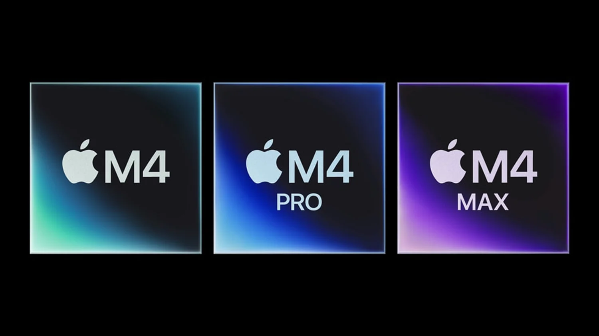
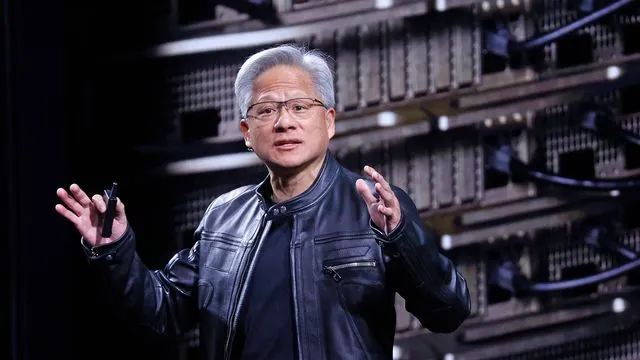
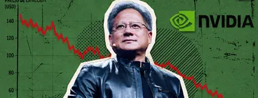

Apple presenta su nuevo chip cuántico
Ana Torres | Corresponsal de Tecnología | 24 Mayo 2026

En un evento sorpresa, Apple reveló un nuevo procesador diseñado para computación cuántica que promete revolucionar la seguridad de los datos. La compañía afirma que este chip duplicará la velocidad de procesamiento en sus servidores.
Expertos de la industria señalan que esta tecnología podría cambiar la forma en que entendemos la ciberseguridad a nivel global, obligando a las empresas a actualizar sus protocolos de protección.
Nvidia vuelve a nombrar a Jensen Huang como CEO once días después de su renuncia
Redacción | Equipo de Tecnología | 23 Noviembre 2026

El consejo de administración de Nvidia anunció este lunes que reincorporó a Jensen Huang como presidente y CEO de la empresa, once días después de que dejara el cargo en medio de un escándalo personal.
La noticia hizo subir con fuerza las acciones de la compañía: según medios internacionales, avanzaron más de 25% en las operaciones previas a la apertura del mercado. El presidente de Estados Unidos, Donald Trump, celebró la decisión en redes sociales y dijo que la junta tomó "la decisión correcta".
Sin embargo, las dudas siguen abiertas. Las investigaciones sobre el presunto espionaje chino continúan, algo que el gobierno de China niega.
Jensen Huang renuncia como CEO de Nvidia y las acciones caen 13%
Redacción | Equipo de Tecnología | 12 Noviembre 2026

Jensen Huang, fundador de Nvidia en 1993, renunció el 12 de noviembre a sus cargos de presidente, CEO y miembro del consejo, con efecto inmediato. La empresa, la más valiosa del mundo, llegó a perder un 13% en bolsa y los principales índices de Wall Street abrieron a la baja.
La salida ocurrió tras la polémica por su relación con Alice Huang, una empresaria a quien los servicios de inteligencia de Estados Unidos señalan como presunta agente del gobierno chino. El consejo abrió una investigación independiente, y la directora financiera, Colette Kress, quedó como CEO interina.
El caso preocupa por la rivalidad entre Estados Unidos y China por el liderazgo en inteligencia artificial, ya que los chips de Nvidia son usados por casi todas las grandes empresas del sector.